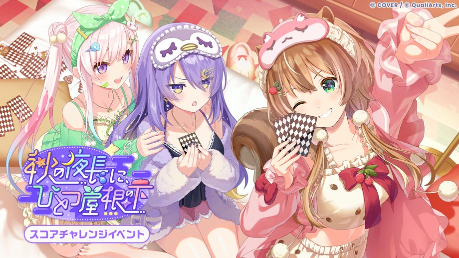
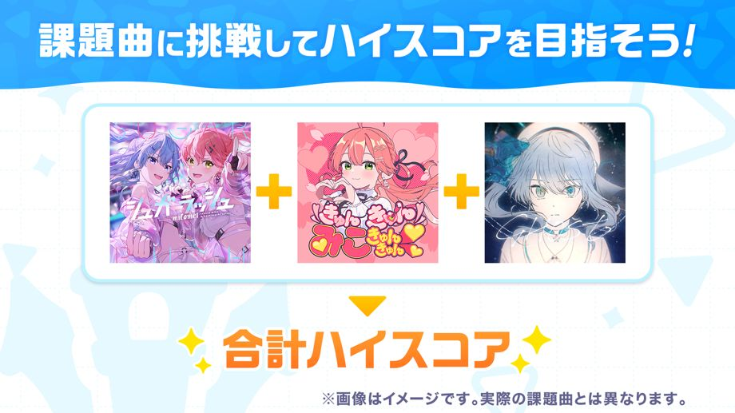
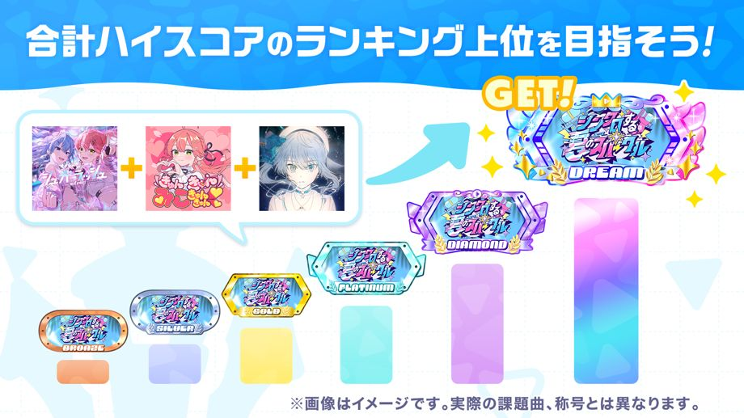
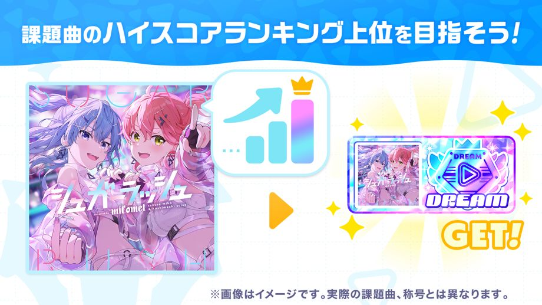
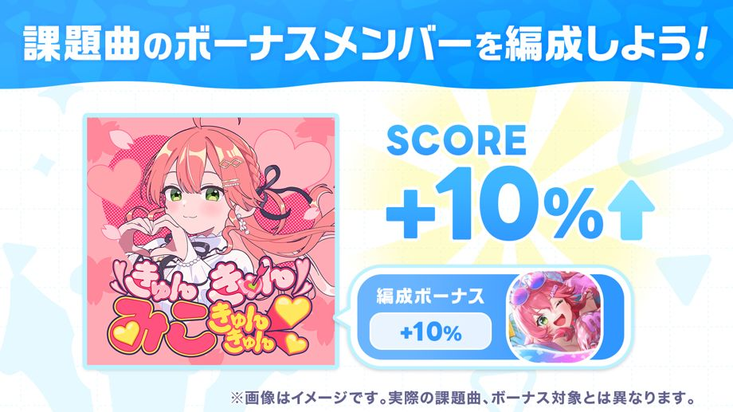
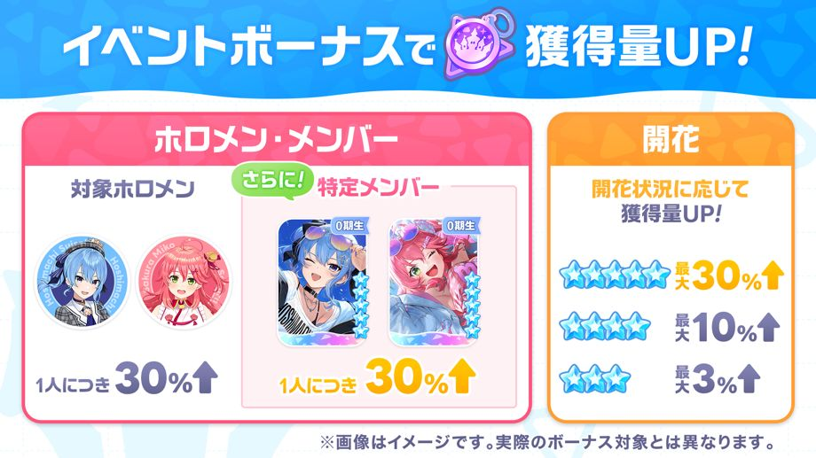

スコアチャレンジイベント「秋の夜長に、ひとつ屋根の下」が開催！
◆参加条件
メインストーリー1章4話「Mythical Connection」クリア
◆開催期間
2026-11-06 12:00:00,2026-11-12 19:59:59
◆結果発表期間
2026-11-13 12:00:00,2026-11-18 19:59:59
◆イベントバッジ交換期限
2026-11-18 19:59:59
イベント概要

スコアチャレンジイベントは、イベント課題曲に挑戦してハイスコアを目指すイベントです。
ハイスコアのランキングへの入賞や、期間中にライブやミニゲームをプレイすることで、イベントバッジを獲得できます。
イベントバッジを集めると交換所でイベントメモリーなどのアイテムと交換することができます。
◆イベントメモリー

合計ハイスコアランキング

合計ハイスコアランキングは、イベント課題曲の期間限定スコアを合計した値に応じたランキングです。
ランキングに入賞すると、イベント限定称号などの報酬を獲得できます。
※詳細は［イベント］→［ランキング］→［合計ハイスコアランキング］をご確認ください。
ハイスコアランキング

ハイスコアランキングは、イベント課題曲ごとに期間限定スコアを競うランキングです。
ランキングに入賞すると、イベント限定称号を獲得することができます。
※イベント課題曲では、イベント期間限定スコアと通常のスコアのどちらも保存されます。
※詳細は、［イベント］→［ランキング］→［ハイスコアランキング］をご確認ください。
イベントスコアボーナス

イベントボーナスには、ボーナス対象のメンバーを編成してイベント課題曲に挑戦すると、期間限定スコアがアップするスコアボーナスがあります。
スコアボーナスの対象メンバーはイベント課題曲ごとに異なります。
◆イベント課題曲
・Dramatic XViltration
・メトロポリス (metropolis)
・Multiverse
・Lucu Juga
※詳細は、［イベント］→［イベントボーナス］をご確認ください。
イベント獲得ボーナス

イベントボーナスには、ライブのイベントバッジの獲得量がアップするボーナスがあります。
ライブの獲得ボーナスには「メンバーボーナス」「ホロメンボーナス」「開花ボーナス」の3種類があります。
・メンバーボーナス：対象のメンバーを編成してライブに挑戦すると獲得量アップ
・ホロメンボーナス：対象のホロメンのメンバーを編成してライブに挑戦すると獲得量アップ
・開花ボーナス：編成したメンバーの開花状況に応じて、ライブ挑戦時の獲得量アップ
また、イベントボーナスには、ミニゲームのイベントバッジの獲得量がアップするボーナスがあります。
ミニゲームの獲得ボーナスには「ミニゲームボーナス」「メンバーボーナス」の2種類があります。
・ミニゲームボーナス：対象のミニゲームに挑戦すると獲得量アップ
・メンバーボーナス：対象のメンバーを所持しているだけで獲得量アップ
◆ボーナス対象のホロメン
・アユンダ・リス
・ムーナ・ホシノヴァ
・アイラニ・イオフィフティーン
◆ボーナス対象のメンバー
・★5 うとうと気分で身支度を アユンダ・リス
・★5 星瞬く夜、ゆったりバスタイム ムーナ・ホシノヴァ
・★5 陽だまりぽかぽかスマイル アイラニ・イオフィフティーン
◆ボーナス対象のミニゲーム
・くらやみチェイス
※詳細は、［イベント］→［イベントボーナス］をご確認ください。
注意事項
・本イベントで獲得したイベントバッジは次回イベントへ持ち越すことはできません。
・交換期限を過ぎたイベントバッジはご利用いただけません。ご注意ください。
・ランキング報酬はランキング結果発表後にログインすることで［パーク］→［メニューアイコン］→［ギフト］よりお受け取りいただけます。
・結果発表期間中に一度もログインしなかった場合でも、期間終了後にギフトよりお受け取りいただけます。
・結果発表期間終了後に受け取りが完了していない達成済みのミッション報酬は、期間終了後に［パーク］→［メニューアイコン］→［ギフト］よりお受け取りいただけます。
・本イベントの交換所で交換可能なイベントメモリーは、今後再登場する可能性がございます。
・通信状況等の影響により、開始および終了時刻に1秒前後の誤差が生じる場合がございます。
・開催期間および内容は、予告なく変更する場合があります。
・詳細は［パーク］→［イベント］にある本イベントをご確認ください。